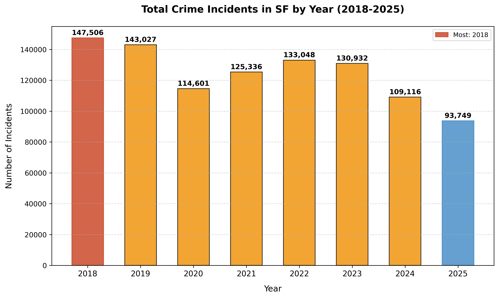

Explore crime trends, hourly patterns, and geographic distribution in San Francisco through interactive and static visualizations.
Static visualization of total crime counts in San Francisco from 2018 to 2022. Shows the overall trend of crime rates over time.

Explore how crime rates vary by hour of the day. Hover over the chart to see exact values, zoom, and pan for details.
Open Full Screen →Geographic distribution of crimes in San Francisco. Pan, zoom, and explore the heatmap to see high-crime areas.
Open Full Screen →